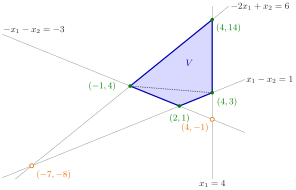

Adjacent Corner Points¶
Definition¶
Consider a linear program with variables, and count the lower bounds on single variables, such as (called domain definitions), among its constraints. A corner point is a point of at which linearly independent constraints are binding; constraints are linearly independent if their normal vectors are. A corner point in the feasible region is a feasible corner point.
Let be corner points, and let and be sets of linearly independent constraints that intersect in and in , respectively. The points and are adjacent if and can be chosen such that
Interpretation¶
Two corner points are adjacent when one can walk from one to the other along an edge: keep of the defining constraints binding, release the remaining one, and stop where a different constraint becomes binding.

The figure is Example 2. The four boundary lines meet pairwise in six corner points: the filled ones, , , and , are feasible and are the extreme points of ; the open ones, and , are not. In the plane, two corner points are adjacent exactly when they lie on a common line, so each line carries three mutually adjacent corner points, and the blue edges of join adjacent feasible ones. The dotted diagonal joins and , which share no line and are not adjacent, although their distance is smaller than the length of the edge from to . Along , the feasible is also adjacent to the infeasible .
In , linearly independent binding constraints pin down a single point, because their normal vectors span . Dropping one leaves independent equations, whose solution set is a line. Two adjacent corner points both lie on the line of their shared constraints, and walking along it from to keeps these constraints binding while one constraint is exchanged for another. In the plane, : adjacent corners are joined by a single boundary line.
The words "can be chosen" matter at a corner where more than constraints are binding: there are several ways to pick independent ones, and adjacency only asks that one choice works (Example 4). Note also that the definition is about corner points, feasible or not. By the rank test for extreme points of a polyhedral set, the feasible corner points are exactly the extreme points of the feasible region; the infeasible ones are intersections of boundary hyperplanes outside it.
The corner points of OR Modelling are the same objects. A simplex pivot there that changes the solution moves to an adjacent corner: one constraint stops being binding and another starts. A common misreading is that adjacent means close: adjacency is about shared constraints, not distance, and two nonadjacent corners can be nearer to each other than two adjacent ones (Example 2).
Key Results¶
- A corner point need not lie in the feasible region; the feasible corner points are exactly the extreme points of the feasible region.
- The constraints shared by adjacent corner points and are binding on the whole line through and , so one moves from one to the other along their intersection.
- If adjacent corner points and are both feasible, the segment between them lies in the feasible region, since that region is convex.
- Each corner point is determined by a set of of the constraints, so a linear program in standard form with constraints and variables, which together with the conditions has constraints, has at most corner points.
- Adjacency is the neighbourhood used by the improving adjacent corner point theorem: from a nonoptimal feasible corner point there is a better adjacent feasible corner point, provided an optimal corner point exists.
Examples¶
1. The cube. Let the feasible region be , , with domain definitions and constraints . Three of these six constraints are linearly independent exactly when they involve all three coordinates, so the corner points are the eight vertices, all feasible. The vertices and share the binding constraints , , so they are adjacent: they are the ends of an edge. The vertices and share only , so they are not adjacent. Every vertex has exactly three adjacent vertices, those differing from it in one coordinate.
2. A quadrilateral. Let be given by , , and . Each of the pairs of boundary lines meets in one point, so there are six corner points: , , , , which are feasible, and , , which are not (the first violates , the second ). Going round , , , , are adjacent in turn, each pair sharing one line. The diagonal pairs are not adjacent: lies on and , on and , with no line in common. Yet their distance is less than the distance between the adjacent corners and . The infeasible corner is adjacent to through , which is why the simplex idea asks for adjacent corner points that are also feasible.
3. An unbounded region. For , , in , the corner points are and , both feasible, and , which violates . Any two of the three lie on a common line, so all three pairs are adjacent; only the pair , consists of feasible corner points.
4. More than binding constraints. Take , , and . At three constraints are binding, any two of them independent. With and the intersection is empty, but the choice shares , so and are adjacent. On the other hand , where only and are binding, shares no constraint with any choice at , so these two are not adjacent.
Prerequisites¶
- Corner Point
- Linear Dependence and Independence
- Binding and Nonbinding Constraints
- Extreme Points of a Polyhedral Set
Related Concepts¶
- Nonoptimal and Optimal Corner Points
- Optima at Extreme Points
- Possible Outcomes of a Linear Program
- Basis and Basis Matrix
- Simplex Pivot
- Degeneracy
Sources¶
- Math VI: Convexity and Optimization · Week 4
- H. E. Nusse and M. Dienstknecht, Math VI: Convexity and Optimization, lecture notes 2026–2027, Section 4.2
Aliases: adjacent corners, adjacent vertices, neighbouring corner points, adjacency of corner points Keywords: |H_{\boldsymbol{u}}\cap H_{\boldsymbol{v}}|=n-1, n linearly independent binding constraints, feasible corner point, moving along an edge, corner point need not be feasible Symbols: intersection, real numbers, square root
Last updated: 5 November 2026 12:47
Adjacent Corner PointsNonoptimal and Optimal Corner PointsCorner PointLinear Dependence and IndependenceBinding and Nonbinding ConstraintsExtreme Points of a Polyhedral SetOptima at Extreme PointsPossible Outcomes of a Linear ProgramBasis and Basis MatrixSimplex PivotDegeneracy